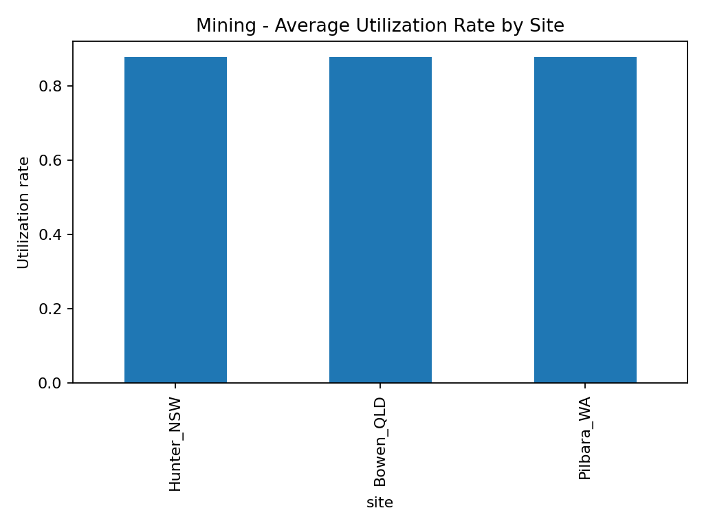
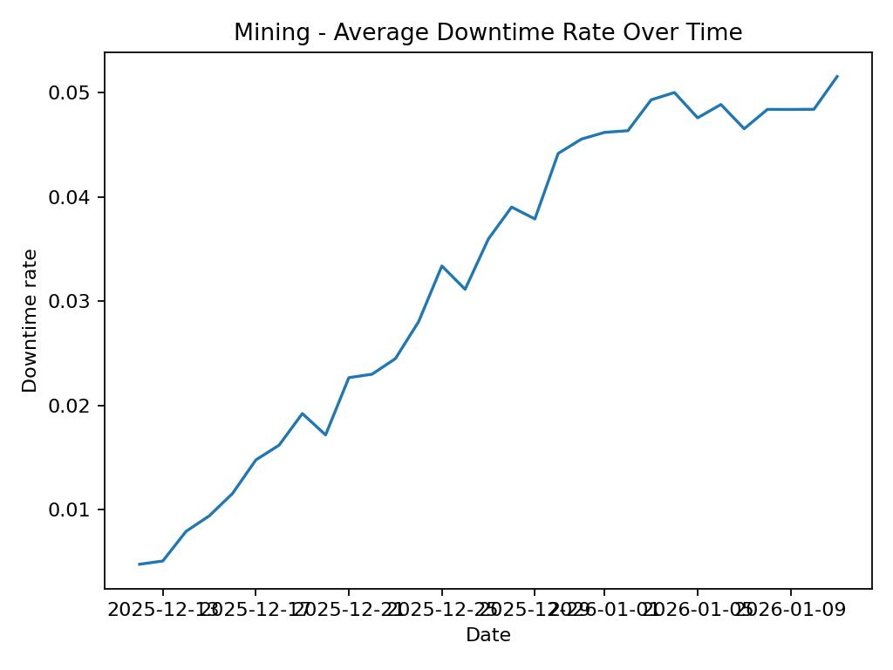
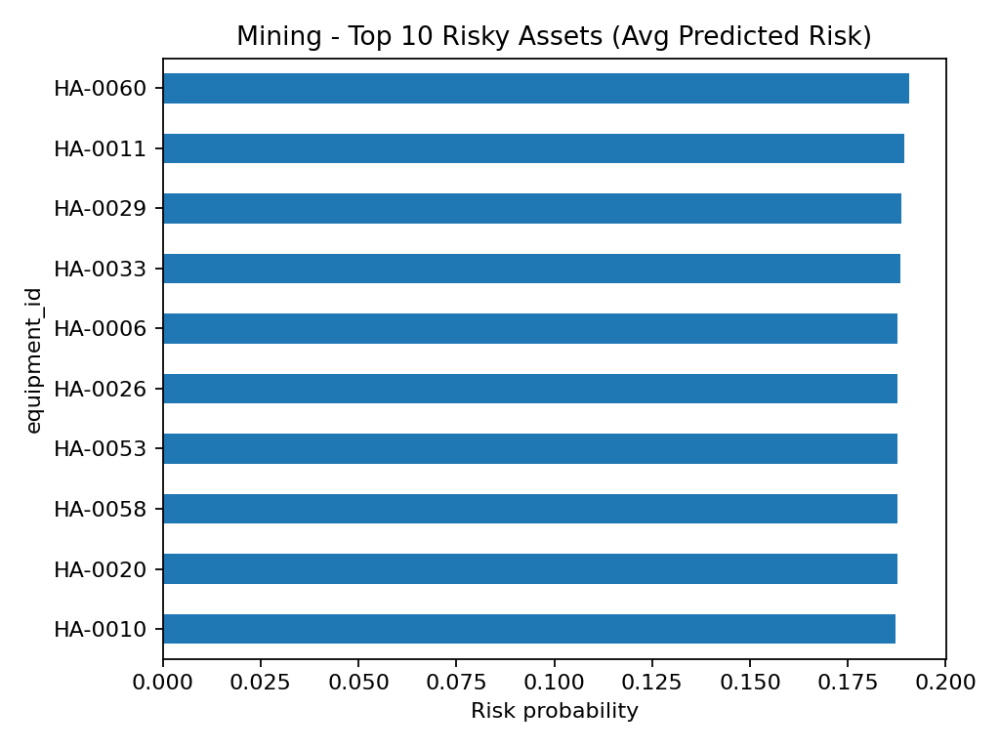
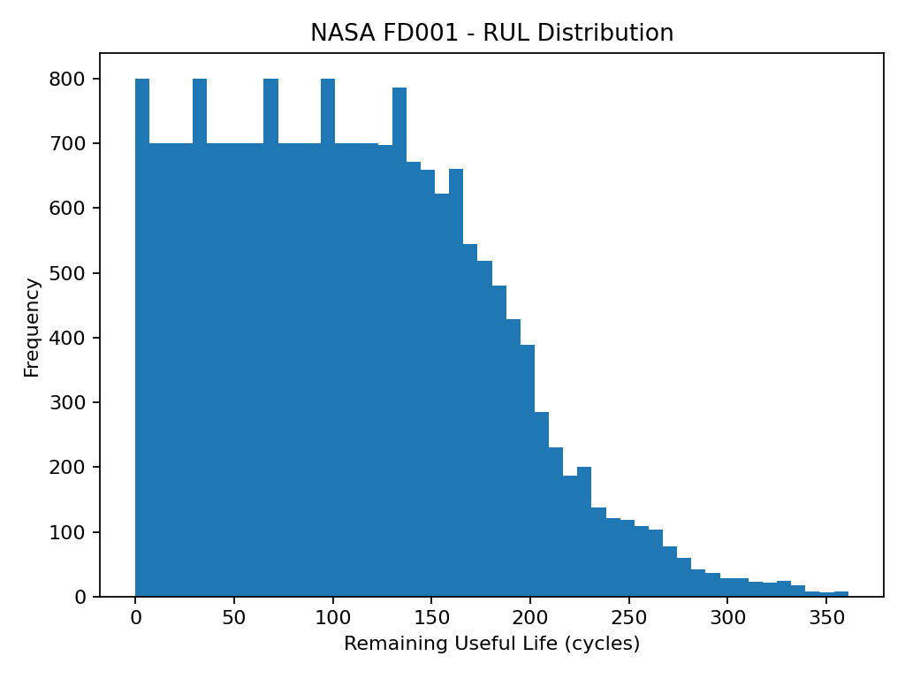
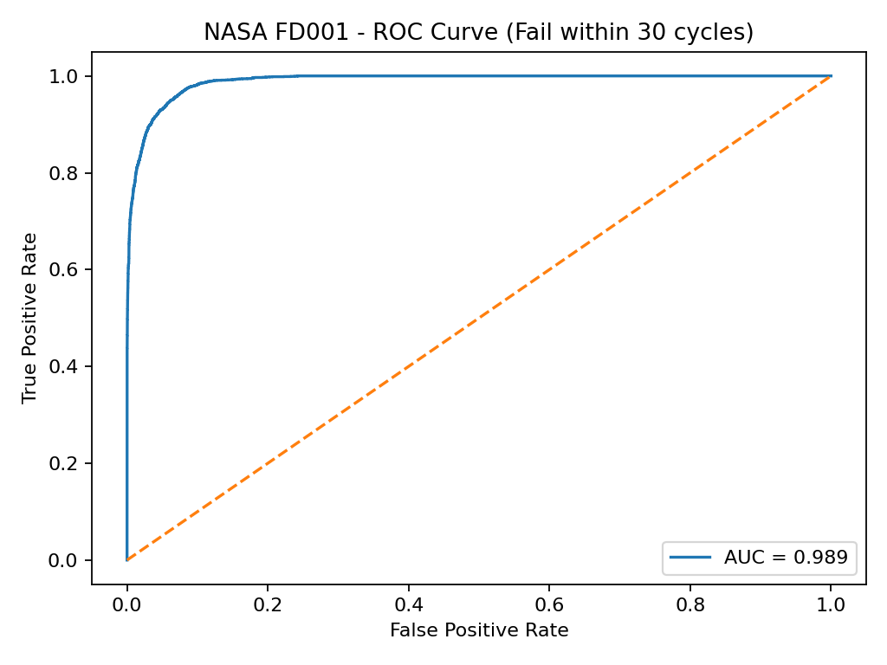
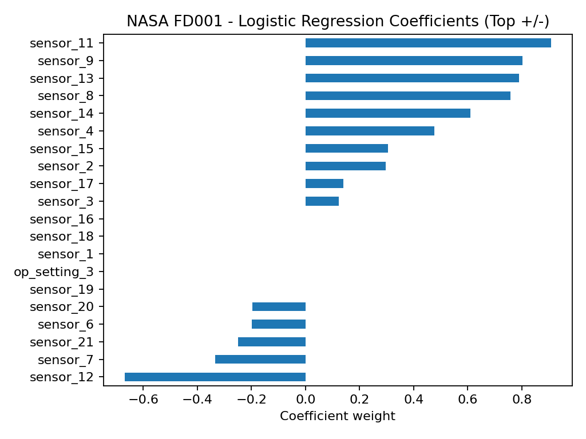

Mining Operations Analytics Platform - Report
Mining Mode (Synthetic)
- Utilization by site
- Downtime trend
- Top risky assets



NASA Mode (C-MAPSS FD001)
- RUL distribution
- ROC curve (fail within 30 cycles)
- Top model coefficients



Generated locally from the project pipeline outputs.